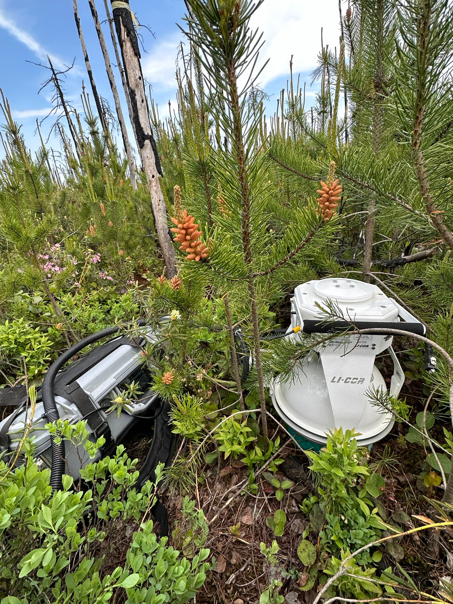

Research
Here is a list of projects I’ve been working on.
Research & Field Work
My primary research has been concentrated on Burns Bog, a raised domed peat bog siutated in Metro Vancouver. The bog is equipped with two Eddy covariance (EC) stations, a mobile flux tower and multiple chamber sites. In my role as an undergraduate research assistant, I conducted research in quantifying greenhouse gas (GHG) fluxes within zones of the bog that experienced fire events in 2005 and 2016, as well as in an unburned zone. Theses measurements were executed employing static chamber - gas chromatography method.
For my master’s thesis, I am investigating the impacts of seedlings removal on soil respiration (CO_2 and CH_4) within the zone of the bog that was burned in 2016, utilizing the static chamber-portable analyzer technique. Concurrently, I have a strong interest in the modeling of EC data. This interest inspired me to undertake a project aimed at exploring the influence of heatwaves on GHG fluxes (CO_2 and CH_4) by employing gap-filled flux data derived from the EC systems located in the bog.
Master Thesis - Investigating Impacts of Seedling Removal on Soil Respiration
On July 3, 2016, a fire broke out in the north-western portion of the Burns Bog at the base of one of the Corus Entertainment radio towers, which consumed up to 78 hectares of the bog area. The fire resulted in the incineration of up to 50 cm of the surface peat, the area was subjected to massive seed releases from decades of accumulation of lodgepole pinecones.The post-fire vegetation communities became tree-dominated, mainly comprising native and non-native tree species. This in turn increases soil carbon emissions to the atmosphere and can decrease the carbon storage capacity of peatlands.
Appropriate postfire management (seedling removal) is hypothesized to protect the carbon sequestration potential of peatlands by preventing their transition to a forest ecosystem. This study aims to investigate the impacts of seedling removal on soil and ground-level respiration (both CO_2 and CH_4) within a burned section of Burns Bog.
The study focuses on two distinct study areas (seedling area and seedling-removal area) located within the 2016 burned zone of the bog. Within each study area, three distinct study ecosystem types (Pine Sphagnum Low Shrub/Tall Shrub/Woodland) have been identified. Six collars were installed at each of the six chamber sites.
The manual measurements include: CO_2 and CH_4 fluxes by using LI-COR 7810 gas analyzer; peat volumetric water content and temperature at depths of 5cm and 10cm beside each collar; water table depth at each monitoring well across all study sites The continuous measurements include: continuous water table depth across various ecosystem types; continuous temperature at 5, 10, and 30 cm below the peat surface; continuous water content at sites representing one specific ecosystem type.


In early summer 2023 I designed and deployed a light-weight EC system mounted on a telescoping tripod to measure CO2 fluxes in stand of lodgepole pine seedlings in Burns Bog that sprouted following a fire in 2016.
Flux Footprint Mapping
I’ve developed a python based tool for creating flux footprints web maps using the Kljun et al. (2015) flux footprint model. The maps for our field sites are shown in the image below. You can click the list sites on the left to zoom to site and see the flux footprint climatology for the site. The tool also has the capability to include a vegetation map for the site to better estimate the flux contribution by different source/sink area
- I’m still working on preparing/documenting the code for broader distribution. I’ll post a link here when its ready :D
Arctic Carbon Fluxes


For my PhD research, I studied carbon fluxes in wetland ecosystem in the Mackenzie Delta Region. I conducted two field seasons of research. In 2016 I worked at Illisarvik, an artificially drained thermokarst lake on Richard’s Island, NWT. Then in 2017 I installed an EC station at Fish Island, a low-center polygon ecosystem in the Mackenzie River Delta.
Teaching
I have been working as a sessional instructor at UBC since 2020. In November 2022, I was given an “Open Educational Resource Champion” award for publishing all my course materials as Open Educational Resource (OER) on Github.
- I feel this is the most effective, transparent, and accessible way I can provide content for my students.
- I find the institutional tools provided by UBC (e.g., Canvas) to be lacking in functionality and flexibility; they also pose an obvious barrier to accessibility.
- By using Github I can tailor my course webpage as I see fit, prospective students can review this syllabus and other content to see if they might be interested in the course, and students will continue to have access the course content even after they graduate!
Courses
From Summer 2020 to Summer 2023, I taught Geographic Information Science. You can find the website for the most recent term of the course here. As of Fall 2023, I am teaching “Atmospheric Environments”, which is an introductory level course focusing on the dynamics governing the weather and climate. The course website can be found here. In Winter 2023, I will be teaching “Microscale Weather and Climate”, an upper level course focusing on ecosystem scale weather and climate dynamics and how they influence the global climate system.
Evaluations
All of my available teaching evaluations are posted here. Thus far these evaluations only cover GEOS 270 (Geographic Information Science).
- The wording of the evaluation questions has changed between terms, but one key question has not changed: Considering everything, how would you rate this course? The chart and table below summarize my student’s responses.